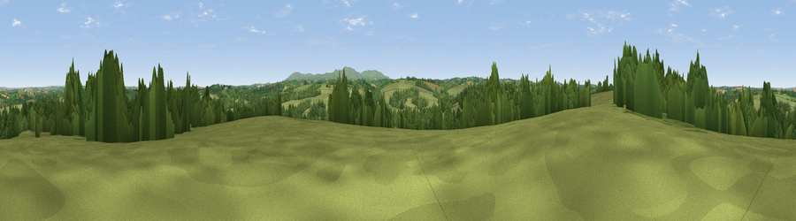

Viewpoint near Hatherleigh
#26874 in England · top 55% of its area beats it · near Hatherleigh · access?Where it is
The exact computed spot (SS 52725 02275). Click the marker for map links.
Public access: no public right of way or access land is recorded at this exact spot — it may be on private land. Computed from Natural England's CRoW access layer and OpenStreetMap rights of way — not the legal definitive map. Always verify locally.
The view, rendered

A 360° render of this exact spot computed from the terrain model, tree cover and land cover — summer colours, afternoon light, calibrated against photographs of famous viewpoints. Real trees, hedges and buildings will differ in detail.
The panorama
Grey silhouette: terrain skyline in each direction (720 bearings, Earth curvature and refraction included). Dashed green: skyline with trees (+15 m) and buildings (+8 m) as obstacles. Blue strip: how far the ground is visible on each bearing.
Where the view opens
Wedge length = distance to the farthest visible ground on that bearing (vegetation-aware). Rings at 10, 25 and 50 km.
What fills the view
72% grassland · 25% woodland · 2% cropland ·
Angular shares of the visible panorama (visual magnitude), not map area. Landscape diversity 0.30 (0–1 Shannon).
Key numbers
More beautiful places nearby
The staircase of upgrades: each row has a higher view potential than everything closer. Driving times are estimates from straight-line distance, calibrated against real road routing — check an actual route before setting out.
| Place | Direction | Drive | Score |
|---|---|---|---|
| Rutleigh Ball Hill | WSW · 2 km | ~4 min | 46.1 |
| Hatherleigh Moor | NE · 3 km | ~8 min | 53.6 |
| Viewpoint near Highampton | WNW · 5 km | ~10 min | 59.5 |
| Viewpoint near Petrockstowe | NNW · 8 km | ~15 min | 65.5 |
| Viewpoint near Sourton | SSE · 12 km | ~22 min | 72.2 |
| Sourton Tors | S · 13 km | ~23 min | 74.8 |
| Yes Tor | SSE · 13 km | ~24 min | 78.5 |
| Viewpoint near Parkham | NW · 26 km | ~42 min | 81.7 |
50.80127, -4.09133 · source: screening · position refined by local search. Computed location — check access rights before visiting.